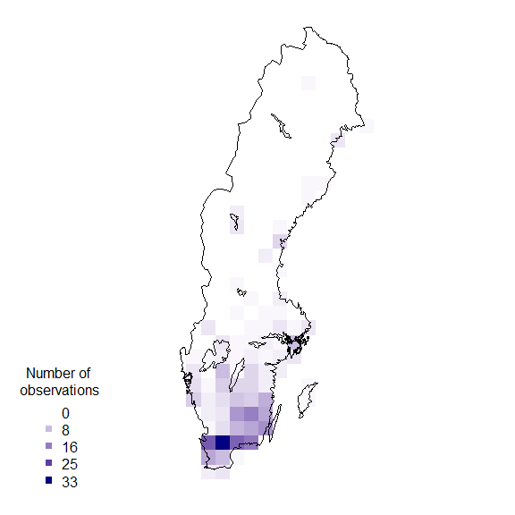
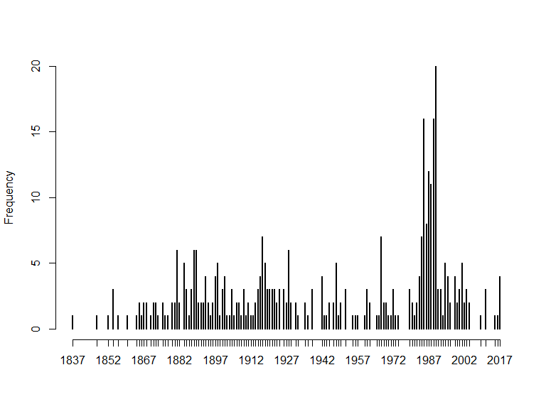

Introduction to SBDI4R
Alejandro Ruete and Debora Arlt
2021-10-26
Source:vignettes/SBDI4R.Rmd
SBDI4R.RmdHere we provide a collection of use-examples showing examples for a range of queries that we think a typical use of the biodiversity infrastructure may want to perform. The examples are extended from a basic set for ALA4R presented at the 2014 ALA Science Symposium.
The SBDI4R package is primarily for accessing data. It includes some filter functions that allow you to filter prior to download. It also includes some simple summary functions, and some function for some simple data exploration. The examples also show you how you can use the data by continued exploring and analyzing using other R package.
Please get in contact with us if you have questions regarding the use of the SBDI4R package.
Using SBDI4R
Let’s assume you have already installed the package as shown in the main site.
Load the SBDI4R package:
library(SBDI4R)
sbdi_config(caching = "off")
sbdi_config(email = "sbdi4r-test@biodiversitydata.se",
download_reason_id = 10)
# sbdi_config(cache_directory="Z:/mydir/sbdi-cache")Then, check that we have some additional packages that we’ll use in the examples, and install them if necessary.
to_install <- c("ape", "dplyr", "ggplot2", "jpeg", "leaflet","maps", "mapdata",
"maptools", "phytools", "sf", "tidyr", "vegan") #, "rgdal", "rgeos",
to_install <- to_install[!sapply(to_install, requireNamespace, quietly = TRUE)]
if (length(to_install) > 0)
install.packages(to_install, repos = "http://cran.us.r-project.org")Example 1: Name searching and taxonomic trees
We want to look at the taxonomy of titmice, but we don’t know what the correct scientific name is, so let’s search for it:
sx <- search_fulltext("parus")
#> [1] "https://species.biodiversitydata.se/ws/search.json?q=parus&fq=idxtype%3ATAXON"
sx$data[,c( "name","species", "speciesGuid", "rank")]
#> name
#> 1 Parus cinereus montanus Conrad von Baldenstein, 1827
#> 2 Parus cela Linnaeus, 1758
#> 3 Parus atricristatus atricristatus
#> 4 Parus caspicus Gmelin, 1774
#> 5 Cyanistes caeruleus x Parus major
#> 6 Parus dresseri longirostris Kleinschmidt, 1897
#> 7 Parus major x Cyanistes caeruleus
#> 8 Derolus parus Adlbauer, 2000
#> 9 Parus atricristatus atricristatus
#> 10 Derolus parus Adlbauer, 1995
#> species speciesGuid rank
#> 1 <NA> <NA> subspecies
#> 2 Parus cela Linnaeus, 1758 11040059 species
#> 3 <NA> <NA> subspecies
#> 4 Parus caspicus Gmelin, 1774 11068597 species
#> 5 Cyanistes caeruleus x Parus major 10772599 species
#> 6 <NA> <NA> subspecies
#> 7 Parus major x Cyanistes caeruleus 10960118 species
#> 8 Derolus parus Adlbauer, 2000 10977720 species
#> 9 <NA> <NA> subspecies
#> 10 Derolus parus Adlbauer, 1995 10663010 speciesBut we see that some non-birds are also returned, e.g. insects (Neuroctenus parus). We want to restrict the search to Paridae.
sx <- search_fulltext("parus", fq = "family_s:Paridae")
#> [1] "https://species.biodiversitydata.se/ws/search.json?q=parus&fq=family_s%3AParidae&fq=idxtype%3ATAXON"
sx$data[,c( "name","species", "speciesGuid", "rank")]
#> name
#> 1 Parus cinereus montanus Conrad von Baldenstein, 1827
#> 2 Parus atricristatus atricristatus
#> 3 Cyanistes caeruleus x Parus major
#> 4 Parus dresseri longirostris Kleinschmidt, 1897
#> 5 Parus major x Cyanistes caeruleus
#> 6 Parus atricristatus atricristatus
#> 7 Parus aureola Linnaeus, 1758
#> 8 Parus cyanus x caeruleus
#> 9 Parus rufescens J.K.Townsend, 1837
#> 10 Parus hudsonicus J.R.Forster, 1772
#> species speciesGuid rank
#> 1 <NA> <NA> subspecies
#> 2 <NA> <NA> subspecies
#> 3 Cyanistes caeruleus x Parus major 10772599 species
#> 4 <NA> <NA> subspecies
#> 5 Parus major x Cyanistes caeruleus 10960118 species
#> 6 <NA> <NA> subspecies
#> 7 Parus aureola Linnaeus, 1758 10712825 species
#> 8 Parus cyanus x caeruleus 10157905 species
#> 9 Parus rufescens J.K.Townsend, 1837 2487784 species
#> 10 Parus hudsonicus J.R.Forster, 1772 2487794 speciesTo restrict the query specifically to birds we can also use the ‘fq’ argument to filter the query (see sbdi_fields("general", as_is=TRUE) for all the fields that are queryable), and increase page_size to include more records (default=10):
sx <- search_fulltext("parus", fq = "class_s:Aves", page_size=100)
#> [1] "https://species.biodiversitydata.se/ws/search.json?q=parus&fq=class_s%3AAves&fq=idxtype%3ATAXON&pageSize=100"
head(sx$data[,c( "name","species", "speciesGuid", "rank")])
#> name
#> 1 Parus cinereus montanus Conrad von Baldenstein, 1827
#> 2 Parus cela Linnaeus, 1758
#> 3 Parus atricristatus atricristatus
#> 4 Parus caspicus Gmelin, 1774
#> 5 Cyanistes caeruleus x Parus major
#> 6 Parus dresseri longirostris Kleinschmidt, 1897
#> species speciesGuid rank
#> 1 <NA> <NA> subspecies
#> 2 Parus cela Linnaeus, 1758 11040059 species
#> 3 <NA> <NA> subspecies
#> 4 Parus caspicus Gmelin, 1774 11068597 species
#> 5 Cyanistes caeruleus x Parus major 10772599 species
#> 6 <NA> <NA> subspeciesNow we can download the taxonomic data (note that the search is case-sensitive):
tx <- taxinfo_download("family_s:Paridae",
fields = c("guid", "genus_s", "specificEpithet_s",
"scientificName", "canonicalName_s", "rank"),
verbose = FALSE)
tx <- tx[tx$rank == "species" & tx$genusS != "",] ## restrict to species and not hybridsWe can make a taxonomic tree plot using the phytools package:
library(phytools)
## as.phylo requires the taxonomic columns to be factors
tx$genusS <- as.factor(tx$genusS)
tx$scientificName <- as.factor(tx$scientificName)
tx$canonicalNameS <- as.factor(tx$canonicalNameS)
## create phylo object of canonical name nested within Genus
ax <- as.phylo(~genusS/canonicalNameS, data = tx[1:50,])
plotTree(ax, fsize = 0.7, ftype="i") ## plot it
Example 2: Get some data, filter the search, get quality assertions, plotting data on a map and save data
Download occurrence data for the “Sommarlånke” and view top of the data table:
x <- occurrences(taxon = "Callitriche cophocarpa")
head(x$data)
table(x$data$dataResourceName)
table(x$data$dataResourceID)Similarly, we could search by common name
x <- occurrences(taxon = "sommarlånke",
verbose = FALSE)
head(x$data)
table(x$data$dataResourceName)
table(x$data$dataResourceID)You can also search for a set of species simultaneously (only scientific names so far)…
taxa <- c("Callitriche", "Anarrhinum")
fq_str <- paste0("raw_name:"", taxa, """)
# fq_str <- paste0(fq_str, collapse = " OR ")
xbatch <- occurrences(fq = fq_str,
verbose = FALSE)
table(xbatch$data$dataResourceName)
#> < table of extent 0 >
table(xbatch$data$dataResourceID)
#> < table of extent 0 >
table(xbatch$data$basisOfRecord)
#> < table of extent 0 >Search filters
There are different data sources. Let’s assume you only need to see data from one source, e.g. Lund Botanical Museum (LD). LD’s identifier is “dr2” and you can directly filter the search by:
xf <- occurrences(taxon = "Callitriche cophocarpa",
fq = "data_resource_uid:dr2",
verbose = FALSE)
table(xf$data$dataResourceName)
#>
#> Lund Botanical Museum (LD)
#> 381
table(xf$data$dataResourceID)
#>
#> dr2
#> 381Otherwise, you can search available data resources, collections (and more) using the interactive function pick_filter. The pick_filter function lets you explore data collections, spatial layers. Soon there will be more indexed fields.
fq_str <- pick_filter("resource")
## follow the instructions
xf <- occurrences(taxon = "Callitriche cophocarpa",
fq = fq_str)In the same way you can use the spatial layers that are available to spatially search for the indexed observations.
# fq_str <- pick_filter("layer")
# Follow the instructions, but here we just use the county Uppsala
fq_str <- "cl10097:Uppsala"
xf <- occurrences(taxon = "Callitriche cophocarpa",
fq = fq_str)Note that this is fundamentally different than filtering by county:Uppsala as this will search for the text Uppsala in the field county, rather than spatially matching the observations.
Other filters on queries
Any search could be filtered by any indexed field (a.k.a. column or variable). You can find which are the variables that are indexed with the command `c These filter strings require SOLR syntax, see SOLR For example, let’s filter observations with coordinate uncertainty smaller than or equal to 100 m.
xf <- occurrences(taxon = "Callitriche cophocarpa",
fq = "coordinate_uncertainty:[0 TO 100]")
range(xf$data$coordinateUncertaintyInMetres)
#> [1] 100 100One could search for observations in specific years:
# year = 2019
x2011 <- occurrences(taxon = "Callitriche cophocarpa",
fq = "year:2011")
nrow(x2011$data)
#> [1] 3
x2yr <- occurrences(taxon = "Callitriche cophocarpa",
fq = c("year:2011 OR year:2014"))
nrow(x2yr$data)
#> [1] 3In the same way, one could search for observations between two years:
xf <- occurrences(taxon = "Callitriche cophocarpa",
fq = "year:[2010 TO 2020]")
hist(xf$data$year, xlab = "Year", main = "")
Likewise, search conditions can be accumulated and will be treated as AND conditions:
xf <- occurrences(taxon = "Callitriche cophocarpa",
fq = c("year:[2010 TO 2020]", "month:[06 TO 08]"))
hist(xf$data$year, xlab = "Year", main = "")
or, occurrences could be filtered by the basis of record (that is how was the observation recorded):
xf <- occurrences(taxon = "Callitriche cophocarpa",
fq = "basis_of_record:PreservedSpecimen")
unique(xf$data$basisOfRecord)
#> [1] "PreservedSpecimen"Quality assertions
Data quality assertions are a suite of fields that are the result of a set of tests performed on data. We continue using the data for the Blunt-fruited Water-starwort and get a summary of the data quality assertions:
x <- occurrences(taxon = "Callitriche cophocarpa",
fq = "data_resource_uid:dr2",
verbose = FALSE)
summary(x)
#> number of original names: 1
#> number of taxonomically corrected names: 1
#> number of observation records: 381
#> number of assertions listed: 7 -- ones with flagged issues are listed below
#> invalidCollectionDate: 7 records
#> incompleteCollectionDate: 88 records
#> geodeticDatumAssumedWgs84: 373 records
#> uncertaintyInPrecision: 118 records
#> assumedPresentOccurrenceStatus: 381 records
#> recordedByUnparsable: 2 records
#> firstOfMonth: 13 recordsYou can see a list of all record issues using sbdi_fields("assertions") and see what is considered as fatal quality issues.
assert <- sbdi_fields("assertions")
assertFatal <- assert[assert$isFatal == TRUE,"name"]
wAssertInX <- assertFatal %in% colnames(x$data)
colSums(x$data[,assertFatal[wAssertInX]])
#> numeric(0)Plotting data on a map
You can quickly plot all the observations with the function ocurrence_plot(), here we specify to map all ‘error’ issues:
occurrences_plot(x, "obsPlot.pdf", qa = "error",
grouped = FALSE, taxon_level = "species",
pch = '+')Note that the plot is saved to a pdf file in the current working directory. You can find that by getwd().

There are many other ways of producing spatial plots in R. The leaflet package provides a simple method of producing browser-based maps with panning, zooming, and background layers:
library(leaflet)
## drop any records with missing lat/lon values
x$data <- x$data[!is.na(x$data$longitude) & !is.na(x$data$latitude),]
xa <- check_assertions(x)
## columns of x corresponding to a fatal assertion
x_afcols <- which(names(x$data) %in% xa$occurColnames)
## rows of x that have a fatal assertion
x_afrows <- apply(x$data[,x_afcols], 1, any)
## which taxonIdentificationIssue assertions are present in this data?
these_assertions <- names(x$data)[x_afcols]
## make a link to the web page for each occurrence
popup_link <- paste0("<a href=\"https://records.biodiversitydata.se/occurrences/",
x$data$id,"\">Link to occurrence record</a>")
## colour palette
pal <- c(sub("FF$","", heat.colors(length(these_assertions))))
## map each data row to colour, depending on its assertions
marker_colour <- rep("#00FF00", nrow(x$data))
if(length(these_assertions)>0){
for (k in 1:length(these_assertions)){
marker_colour[x$data[,x_afcols[k]]] <- pal[k]
}
}
## blank map, with imagery background
m <- leaflet() |>
addProviderTiles("Esri.WorldImagery") |>
## add markers
addCircleMarkers(x$data$longitude, x$data$latitude,
radius = 2, fillOpacity = .5, opacity = 1,
col = marker_colour, popup = popup_link) |>
addLegend(colors = pal, opacity = 1, labels = these_assertions)
mSave data
# save as data.frame
Callitriche <- as.data.frame(x$data)
# simplyfy data frame
calli <- data.frame(Callitriche$scientificName,
Callitriche$latitude,
Callitriche$longitude)
# simplify column names
colnames(calli) <- c("species","latitude","longitude")
# remove rows with missing values (NAs)
calli <- na.omit(calli)
# save new dataframe
write.csv(calli,"Callitriche.csv")Example 3: Summarise occurrences over a defined grid
Now, following with the data downloaded in the previous example, we want to summarise occurrences over a defined grid instead of plotting every observation point. First we need to overlay the observations with the grid. In this case, the standard Swedish grids at 50, 25, 10 and 5 km are provided as data (with Coordinate Reference System = WGS84, EPSG:4326).
x <- occurrences(taxon = "Callitriche cophocarpa",
fq = "data_resource_uid:dr2",
verbose = FALSE)
library(sf)
# load some shapes over Sweden
# Political borders
data("swe_wgs84", package="SBDI4R", envir=environment())
# A standard 50km grid
data("Sweden_Grid_50km_Wgs84", package="SBDI4R", envir=environment())
grid <- Sweden_Grid_50km_Wgs84
grid <- st_transform(grid, crs = st_crs(3006))
# make the observations spatial
# NOTE: make sure there are no NAs on either column defining the coordinates
# see example 2 for cleaning your dataset.
wNAcoor <- which(is.na(x$data$latitude))
obs <- st_as_sf(x = x$data[-wNAcoor,],
coords = c("longitude","latitude"))
st_crs(obs) <- st_crs(4326)
obs <- st_transform(obs, crs = st_crs(grid))
nObs <- nrow(obs)
## overlay the data with the grid
listGrid <- st_intersects(grid, obs)
ObsInGridList <- list()
for (i in seq(length(listGrid))) {
if (length(listGrid[[i]]) == 0) {
ObsInGridList[[i]] <- NA
} else {
ObsInGridList[[i]] <- st_drop_geometry(obs[listGrid[[i]],])
}
}
wNonEmpty <- which( unlist(lapply(ObsInGridList, function(x) !all(is.na(x)))) )
if (length(wNonEmpty) == 0) message("Observations don't overlap any grid cell.")
## check nObs
sum(unlist(lapply(ObsInGridList, nrow))) == nObs
#> [1] FALSE
length(ObsInGridList) == nrow(grid)
#> [1] TRUEThe result ObsInGridList is a list object with a subset of the data on each grid.
Summarise
Now summarise occurrences within grid cells:
## apply a summary over the grid
nCells <- length(ObsInGridList)
res <- data.frame("nObs" = as.numeric(rep(NA, nCells)),
"nYears" = as.numeric(rep(NA, nCells)),
row.names = row.names(grid),
stringsAsFactors = FALSE)
cols2use <- c("scientificName", "year")
dataRes <- lapply(ObsInGridList[wNonEmpty], function(x){
x <- x[,cols2use]
colnames(x) <- c("scientificName", "year")
return(c("nObs" = as.numeric(length(x[,"scientificName"])),
"nYears" = length(unique(x[,"year"]))
))
})
dataRes <- as.data.frame(dplyr::bind_rows(dataRes, .id = "id"))
res[wNonEmpty,] <- dataRes[,-1]
res$nObs <- as.numeric(res$nObs)
resSf <- st_as_sf(cbind(res, st_geometry(grid)) )
rownames(resSf) <- grid$idPlotting data on a map
Finally plot the grid summary as a map:
palBW <- leaflet::colorNumeric(palette = c("white", "navyblue"),
domain = c(0, max(resSf$nObs, na.rm = TRUE)),
na.color = "transparent")
oldpar <- par()
par(mar = c(1,1,0,0))
plot(resSf$geometry, col = palBW(resSf$nObs), border = NA)
plot(swe$Border, border = 1, lwd = 1, add = T)
legend("bottomleft",
legend = round(seq(0, max(resSf$nObs, na.rm = TRUE), length.out = 5)),
col = palBW(seq(0, max(resSf$nObs, na.rm = TRUE), length.out = 5)),
title = "Number of \nobservations", pch = 15, bty = "n")
suppressWarnings(par(oldpar))Other polygons
Any other set of polygons could also be used to summarise, for example, the counties.
counties <- swe_wgs84$Counties
obs <- st_transform(obs, crs = st_crs(counties))
## overlay the data with the counties
listGrid <- st_intersects(counties, obs)
ObsInCountyList <- list()
for (i in seq(length(listGrid))) {
if (length(listGrid[[i]]) == 0) {
ObsInCountyList[[i]] <- NA
} else {
ObsInCountyList[[i]] <- st_drop_geometry(obs[listGrid[[i]],])
}
}
wNonEmpty <- which( unlist(lapply(ObsInCountyList, function(x) !all(is.na(x)))) )
if (length(wNonEmpty) == 0) message("Observations don't overlap any grid cell.")
## check nObs
sum(unlist(lapply(ObsInCountyList, nrow))) == nObs # some observations are not in the counties territory
#> [1] FALSE
length(ObsInCountyList) == nrow(counties)
#> [1] TRUE
## apply a summary over the grid
nCells <- length(ObsInCountyList)
res <- data.frame("nObs" = as.numeric(rep(NA, nCells)),
"nYears" = as.numeric(rep(NA, nCells)),
stringsAsFactors = FALSE)
cols2use <- c("scientificName", "year")
dataRes <- lapply(ObsInCountyList[wNonEmpty], function(x){
x <- x[,cols2use]
colnames(x) <- c("scientificName", "year")
return(c("nObs" = length(x[,"scientificName"]),
"nYears" = length(unique(x[,"year"]))
))
})
dataRes <- as.data.frame(dplyr::bind_rows(dataRes, .id = "id"))
res[wNonEmpty,] <- dataRes[,-1]
res$nObs <- as.numeric(res$nObs)
resSf <- st_as_sf(cbind(res, st_geometry(counties)))
rownames(resSf) <- counties$LnNamnand again plotting as a map:
palBW <- leaflet::colorNumeric(c("white", "navyblue"),
c(0, max(resSf$nObs, na.rm = TRUE)),
na.color = "transparent")
oldpar <- par()
par(mar = c(1,1,0,0))
plot(resSf$geometry, col = palBW(resSf$nObs), border = NA)
plot(swe_wgs84$Border, border = 1, lwd = 1, add = T)
text(st_coordinates(st_centroid(counties)),
labels = as.character(counties$LnNamn), font = 2, cex = .5 )
legend("bottomleft",
legend = round(seq(0, max(resSf$nObs, na.rm = TRUE), length.out = 5)),
col = palBW(seq(0, max(resSf$nObs, na.rm = TRUE), length.out = 5)),
title = "Number of \nobservations", pch = 15, bty = "n")
suppressWarnings(par(oldpar))Add the county name to each observation
countiesLab <- as.character(counties$LnNamn)
## Add a column to the obs data.frame to hold the id of the overlapped polygon,
## in this case, Län (county) and plot which observation didn't fall with any
## territory.
obs$overId <- NA
for (c in 1:length(ObsInCountyList)) {
if (nrow(ObsInCountyList[[c]]) > 0) {
idsC <- ObsInCountyList[[c]]$id
wObs <- match(idsC, obs$id)
obs$overId[wObs] <- rep(countiesLab[c], length(wObs))
}
}
oldpar <- par()
par(mar = c(1,1,0,0))
plot(counties$geometry, border = 1, lwd = 1)
plot(obs$geometry[which(is.na(obs$overId))],
pch = 19, cex = .5, col = "red", add = T)
suppressWarnings(par(oldpar))It is clear from this image that there are observations outside the territorial extent of the county but that may be within the counties water bodies or coastal areas.
Example 4: Area search and report. What listed species exist in a given area?
Vector spatial layers (eg. polygons) can be imported in a number of different ways. biodiversitydata APIs take as search input polygons in the s.k. WKT Well Known Text. So the first step is to load a vector layer and transform it into a WKT string. First download a .zip file with different delimitation for Sweden and move it somewhere you like in your computer. We recommend you move it into your working directory (getwd()). Extract the .zip file named KommunSweref99.zip.
This will only work when you set a valid filepath, and will create an object of class SpatialPolygon. You could instead use the data we kindly provided in this package data("swe").
shape <- swe$Municipalities
## extract just the Municipality of Örebro
shape <- shape[shape$KnNamn == "Örebro", ]We could create the WKT string using the rgeos library:
library(rgeos)
wkt <- writeWKT(as_Spatial(st_transform(shape, crs = st_crs(4326))))Unfortunately, in this instance this gives a WKT string that is too long and won’t be accepted by the web service. Also, the shapefile we just got is projected in the coordinate system SWEREF99 TM, and the web service only accepts coordinates in a geodesic coordinate system WGS84. Instead, let’s construct the WKT string directly, which gives us a little more control over its format:
shape <- st_transform(shape,
crs = st_crs(4326))
shape <- st_union(shape)
## extract the convex hull of the polygon to reduce the length of the WKT string
shape_ch <- st_convex_hull(shape)
# cast it as MULTIPOLYGON as this is what SBDIs API need
# NOTE: as of today, the SBDI APIs will only work properly if the polygon is
# submitted as a MULTIPOLYGON
shape_ch <- st_cast(shape_ch, to = "MULTIPOLYGON")
# create WKT string
wkt <- st_as_text(shape_ch)Now extract the species list in this polygon:
species_list(wkt=wkt, fq="rank:species") %>%
dplyr::arrange(desc(occurrenceCount)) %>%
dplyr::select(species, family, occurrenceCount) %>%
head(10)#> species family occurrenceCount
#> 1 Acrocephalus scirpaceus Acrocephalidae 65263
#> 2 Phylloscopus trochilus Phylloscopidae 44915
#> 3 Acrocephalus schoenobaenus Acrocephalidae 39344
#> 4 Emberiza schoeniclus Emberizidae 39001
#> 5 Cyanistes caeruleus Paridae 33313
#> 6 Parus major Paridae 26987
#> 7 Cygnus cygnus Anatidae 18873
#> 8 Erithacus rubecula Muscicapidae 18809
#> 9 Anser anser Anatidae 18384
#> 10 Sturnus vulgaris Sturnidae 18363Example 5: Community composition and turnover
Define our area of interest as a transect running westwards from the Stockholm region, and download the occurrences of legumes (Fabaceae; a large family of flowering plants) in this area:
## A rough polygon around the Mällardalen
wkt <- "MULTIPOLYGON(((14.94 58.88, 14.94 59.69, 18.92 59.69, 18.92 58.88, 14.94 58.88)))"
## define some environmental layers of interest [see sbdi_fields(fields_type = "occurrence")]
# el10011 https://spatial.biodiversitydata.se/ws/layers/view/more/worldclim_bio_12
# el10009 https://spatial.biodiversitydata.se/ws/layers/view/more/worldclim_bio_10
env_layers <- c("el10009","el10011")
## Download the data. We use the `occurrences()` function, adding environmental
## data via the 'extra' parameter.
x <- occurrences(fq="family:Fabaceae",
wkt=wkt, qa="none",
email="sbdi4r-test@biodiversitydata.se",
download_reason_id="testing",
extra=env_layers)Convert this to a sites-by-species data.frame:
library(dplyr)
library(tidyr)
xgridded <- x$data %>%
## discard genus- and higher-level records
filter(rank %in%
c("species", "subspecies", "variety", "form", "cultivar")) %>%
mutate(longitude=round(longitude*4)/4,
latitude=round(latitude*4)/4,
worldClimMeanTemperatureOfWarmestQuarter = worldClimMeanTemperatureOfWarmestQuarter /10) %>%
## average environmental vars within each bin
group_by(longitude,latitude) %>%
mutate(worldClimAnnualPrecipitation = mean(worldClimAnnualPrecipitation, na.rm=TRUE),
worldClimMeanTemperatureOfWarmestQuarter = mean(worldClimMeanTemperatureOfWarmestQuarter, na.rm=TRUE)) %>%
## subset to vars of interest
select(longitude, latitude, species,
worldClimAnnualPrecipitation,
worldClimMeanTemperatureOfWarmestQuarter) %>%
## take one row per cell per species (presence)
distinct() %>%
## calculate species richness
mutate(richness=n()) %>%
## convert to wide format (sites by species)
mutate(present=1) %>%
do(tidyr::spread(data=., key=species, value=present, fill=0)) %>%
ungroup()
## where a species was not present, it will have NA: convert these to 0
sppcols <- setdiff(names(xgridded),
c("longitude", "latitude",
"worldClimAnnualPrecipitation",
"worldClimMeanTemperatureOfWarmestQuarter",
"richness"))
xgridded <- xgridded %>%
mutate_at(sppcols, function(z) ifelse(is.na(z), 0, z))The end result:
xgridded[, 1:10]
#> # A tibble: 67 x 10
#> longitude latitude worldClimAnnualPrecip~ worldClimMeanTemperatureO~ richness
#> <dbl> <dbl> <dbl> <dbl> <int>
#> 1 15 59 631. 15.3 40
#> 2 15 59.2 648. 15.4 36
#> 3 15 59.5 672. 15.2 38
#> 4 15 59.8 682. 15.2 11
#> 5 15.2 59 625. 15.5 40
#> 6 15.2 59.2 633. 15.8 57
#> 7 15.2 59.5 655. 15.6 30
#> 8 15.2 59.8 661. 15.6 16
#> 9 15.5 59 615. 15.6 31
#> 10 15.5 59.2 625. 15.8 43
#> # ... with 57 more rows, and 5 more variables: Anthyllis vulneraria <dbl>,
#> # Astragalus glycyphyllos <dbl>, Caragana arborescens <dbl>,
#> # Galega orientalis <dbl>, Genista tinctoria <dbl>Now we can start to examine the patterns in the data. Let’s plot richness as a function of longitude:
library(ggplot2)
ggplot(xgridded, aes(longitude, richness)) +
labs(x = "Longitud (º)",
y = "Species richness") +
lims(y = c(0,100)) +
geom_point() +
theme_bw()
Species richness as a function of environment:
ggplot(xgridded, aes(worldClimMeanTemperatureOfWarmestQuarter ,
worldClimAnnualPrecipitation,
colour=richness)) +
labs(x = "Mean temperature of warmest quarter (ºC)" ,
y = "Annual precipitation (mm)",
colour = "Species \nrichness") +
scale_colour_distiller(palette="Spectral") +
geom_point(size=3) +
theme_bw()It seem like there is higher species richness in hottest areas.
How does the community composition change along the transect? Use clustering:
library(vegan)
## Bray-Curtis dissimilarity
D <- vegdist(xgridded[, sppcols], "bray")
## UPGMA clustering
cl <- hclust(D, method="ave")
## plot the dendrogram
plot(cl)
## extract group labels at the 5-group level
grp <- cutree(cl, 5)
## coalesce small (outlier) groups into a single catch-all group
sing <- which(table(grp)<5)
# grp[grp %in% sing] <- 6 ## put these in a new combined group
grp <- sapply(grp, function(z)which(unique(grp)==z)) ## renumber groups
xgridded$grp <- as.factor(grp)
## plot
## colours for clusters
thiscol <- c("#1f77b4", "#ff7f0e", "#2ca02c", "#d62728", "#9467bd", "#8c564b",
"#e377c2", "#7f7f7f", "#bcbd22", "#17becf")
ggplot(xgridded, aes(longitude, latitude, colour=grp)) +
labs(x="Longitude", y="Latitude", colour="Group") +
geom_point(size=3) +
scale_colour_manual(values=thiscol) +
theme_bw()
## or a slightly nicer map plot
library(maps)
library(mapdata)
oldpar <- par()
par(mar = c(1,1,0,0))
map("worldHires", "Sweden",
xlim=c(14.5, 20), ylim=c(58.8, 59.95),
col="gray90", fill=TRUE)
with(xgridded, points(longitude, latitude,
pch=21, col=thiscol[grp],
bg=thiscol[grp], cex=0.75))
suppressWarnings(par(oldpar))Example 6: Handlig data in R after being downloaded
R is pretty powerful when it comes to cleaning, selecting and filtering data
x <- occurrences(taxon="Callitriche cophocarpa",
fq = "data_resource_uid:dr2",
verbose = FALSE)
#keep spatially unique data at 0.01 degrees (latitude and longitude)
ll001 <- unique(x, spatial = 0.01)
# #keep only information for which fatal or "error" assertions do not exist
nofat <- subset(x, remove.fatal = TRUE)
#keep only observations with a maximum spatial uncertainty of 50m
SpatCert <- subset(x, max.spatial.uncertainty = 50)
# quickly get some more info about the data:
# no. observations (records)
nrow(x$data)
#> [1] 381
# no. obs/year
freq_year <- table(x$data$year)
# no. obs across years:
plot(freq_year, bty = "n", ylab="Frequency")
# or
hist(x$data$year, 20, main = "", xlab = "Year")
# Subsetting is done using '[ ]'
x10yr <- x$data[(x$data$year>=2010 & x$data$year<=2019),]
table(x10yr$year)
#>
#> 2011 2015 2016 2017
#> 3 1 1 4Example 7: Aggregating data with ‘BIRDS’
BIRDS is an R package that provides a set of tools for systematizing biodiversity data review in order to evaluate whether a set of species observation are fit-for-use and help take decisions upon its use in further analysis.
In the following examples you will learn to aggregate statistics over space and time.
remotes::install_github("Greensway/BIRDS")
library(BIRDS)
x <- occurrences(taxon="Callitriche cophocarpa",
fq = "data_resource_uid:dr2",
verbose = FALSE)
wNAcoor <- which(is.na(x$data$latitude))
x$data <- x$data[-wNAcoor,]
### fill in NAs
x$data <- x$data[-which(is.na(x$data$year)),]
x$data$month <- ifelse(is.na(x$data$month), 1, x$data$month)
x$data$day <- ifelse(is.na(x$data$day), 1, x$data$day)
## Define the visit
OB <- organiseBirds(x$data[-wNAcoor,],
sppCol = "scientificName",
idCols = c("locality"),
timeCols = c("year", "month","day"),
xyCols = c("longitude", "latitude"))
SB <- summariseBirds(OB, grid = Sweden_Grid_25km_Wgs84)
SBspatial <- SB$spatial
maxC <- max(SBspatial$nObs, na.rm = TRUE)
palBW <- leaflet::colorNumeric(c("white", "navyblue"),
c(0, maxC),
na.color = "transparent")
oldpar <- par()
par(mar = c(4,0,4,0), mfrow=c(1,3))
plot(SBspatial$geometry, col=palBW(SBspatial$nObs),
border = "grey", main="All years") ## with palette
legend("topleft", inset = c(0,0.05),
legend = round(seq(0, maxC, length.out = 5)),
col = palBW(seq(0, maxC, length.out = 5)),
title = "Number of \nobservations", pch = 15, bty="n")
## or export other combinations, e.g. one map per observed year
yearlySf <- exportBirds(SB,
dimension = "spatial",
timeRes = "yearly",
variable = "nObs",
method = "sum")
maxC <- max(st_drop_geometry(yearlySf), na.rm = TRUE)
palBW <- leaflet::colorNumeric(c("white", "navyblue"),
c(0, maxC),
na.color = "transparent")
plot(yearlySf$geometry, col = palBW(yearlySf$'1987'),
border = "grey", main = "1987")
legend("topleft", inset = c(0,0.05),
legend = round(seq(0, maxC, length.out = 5)),
col = palBW(seq(0, maxC, length.out = 5)),
title = "Number of \nobservations", pch = 15, bty = "n")
plot(yearlySf$geometry, col = palBW(yearlySf$'2017'),
border = "grey", main = "2017")
suppressWarnings(par(oldpar))Perhaps one needs to save many summaries over each grid cell.
gridSummary <- st_drop_geometry(SB$spatial)
write.csv(gridSummary, "Callitriche_grid_summary.csv")One could also think of aggregating the data temporally…
# But the function exportBIrds() offers planty of combinations
yearlyXTS <- exportBirds(SB,
dimension = "temporal",
timeRes = "yearly",
variable = "nObs",
method = "sum")
plot(yearlyXTS, col = "darkblue",
grid.ticks.on = "year",
grid.col = "lightgrey",
main = "Number of observations")